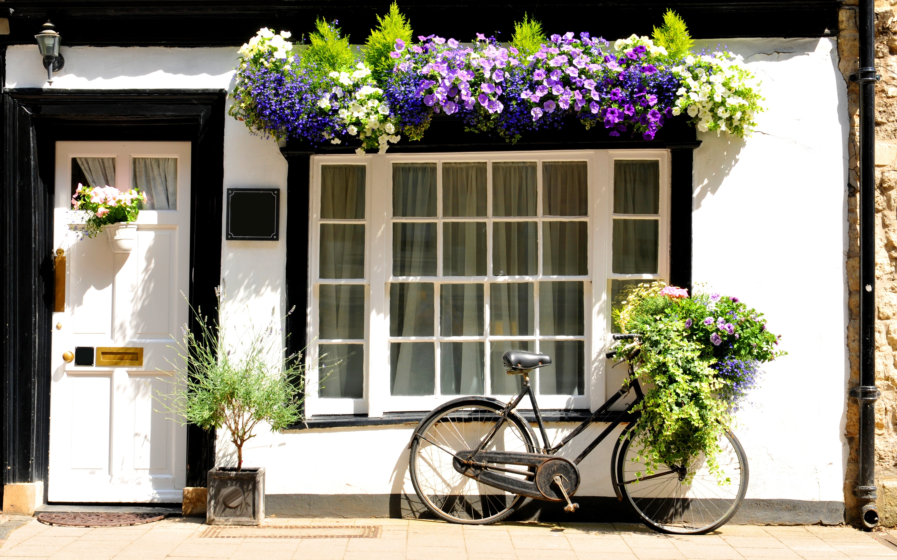

Home of the Famous Minny's Homemade Chocolate Pie
ABOUT
MINNY'S BAKERY
About the Location
Visit us in the heart of Lancaster, where the smell of fresh crust
meets the charm of our historic storefront.
History of Our Bakery
Founded in 1966, Minny's began as a small roadside stand right in Lancaster County with a simple mission: to bake the best chocolate pie in the county. Decades later, we still use the same local flour and farm-fresh eggs that started it all. Minny started with just five pies a day, baked in her own kitchen using a wood-fired oven and ingredients gathered from her neighbors. What was meant to be a small way to share her love for baking quickly turned into a local phenomenon as word spread about the woman with the "magic" chocolate crust.
Over the decades, that roadside stand evolved into the bakery you see today, but the soul of the business hasn't aged a day. We still source our cream from the same local dairies and our eggs from the same family farms. Every morning at 4:00 AM, the smell of browning butter and melting cocoa fills the air, signaling that another chapter of our history is being written, one batch at a time.

Deep Family Legacy
Three generations of rolling dough, hand-crimping edges, and
keeping our family secrets safe and delicious

The Hands that Feed Us
At Minny's, "family-owned" isn't just a label on the door: it's the way we live. Today, the third generation of the Minny family stands at the flour-dusted benches, teaching the fourth generation how to feel the dough for the perfect elasticity. We believe that a recipe is more than just a list of measurements — it's a living heritage that carries the spirit of those who came before us.
This legacy is why we refuse to take shortcuts. You won't find mass-produced fillers or artificial stabilizers in our kitchen. Instead, you'll find the same hand-crimping techniques and slow-cooling processes that Minny herself insisted upon sixty years ago. We aren't just protecting a business; we're protecting a tradition of quality that we hope to pass down for another sixty years.
Minny's Chocolate Pie
Often imitated, never duplicated. This is
the pie that put us on the map.
The Signature Slice
Our famous Chocolate Silk Pie isn't just a dessert; it's a labor of love that takes over 24 hours to complete. It starts with our signature dark-cocoa crust, chilled to perfection to ensure every bite is flaky and crisp. The filling is a proprietary blend of three distinct types of chocolate, folded into a cloud-like mousse that balances deep, earthy cocoa notes with a light, silky finish that melts the moment it hits your tongue.
This is the slice that defined our bakery and continues to be our most requested item. Topped with a mountain of hand-whipped vanilla cream and delicate chocolate shavings, it's a masterclass in texture and taste. Whether it's a centerpiece for a holiday celebration or a quiet Tuesday afternoon treat, one bite tells you everything you need to know about why Minny's is Lancaster's home for chocolate.